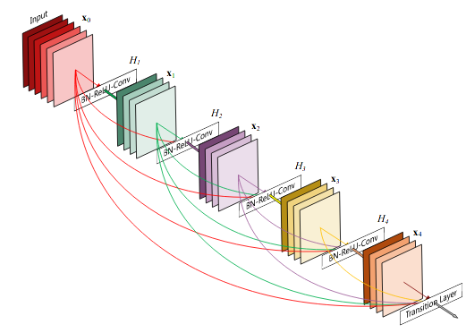
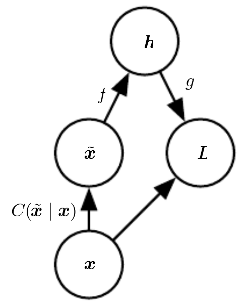
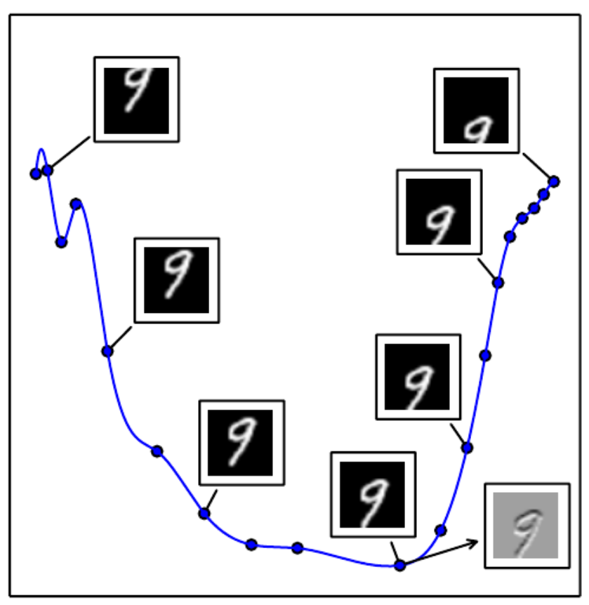

<h1> Lecture 7: Generative models and Autoencoders<br/> </h1>
<h2> Goody Bag III Data Loading, Pre-Processing and Dense Nets</h2>
<h2> Data Loading</h2> <ul> <li/> Loading and pre-processing the data is a very tedious process, often dwarfing the implementation of the neural network <li /> Machine learning frameworks simplify this process. In PyTorch, these are called dataloaders. <li /> Several data loaders for popular vision datasets already exist (MNIST, Fashion MNIST, CIFAR10, ImageNet etc.). But often you will have to create your own dataset. </ul>
<h2> Goody III.1 ImageFolder and DatasetFolder </h2> <ul> <li/> If your dataset is organized as png images in a directory, in the following way: <pre><code class="Python" data-trim data-noescape> root/dog/xxx.png root/dog/xxy.png root/dog/xxz.png root/cat/123.png root/cat/nsdf3.png root/cat/asd932_.png </code></pre> then you can use <pre><code class="Python" data-trim data-noescape> torchvision.datasets.ImageFolder </code></pre> <li class=fragment />If instead of .png you have other files (not necessarily images), you can use <pre><code class="Python" data-trim data-noescape> torchvision.datasets.DatasetFolder </code></pre> This class requires as argument a "loader" function that can open the file and produce an array </ul>
<h2> Goody III.2 Dataset and DataLoader </h2> <ul> <li/> The most general case is to create your own DataSet class as follows: <pre><code class="Python" data-trim data-noescape> from torch.utils.data import Dataset class MyTrainingDataset(Dataset): def __init__(self, root, transform=None, target_transform=None): self.root = root self.transform = transform self.target_transform = target_transform self.data = np.load(self.root) #replace this def __len__(self): return len(self.data) def __getitem__(self, idx): ... #write here code to obtain one data sample and target if self.transform: sample = self.transform(sample) if self.target_transform: target = self.target_transform(target) return sample, target </code></pre> </ul>
<h2> Goody III.3 DenseNets </h2> <div class=row> <div class=column>  </div> <div class=column> <ul> <li>Connects each layer to every other layer in a feed-forward fashion</li> <li>Outputs of convolutional operations are concatenated</li> <li>Alleviates vanishing gradients problem</li> <li>Substantially reduce the number of parame-ters</li> </ul> </div> </div> <p class=ref><a href=https://arxiv.org/pdf/1608.06993.pdf >Huang et al. 2016</a></p> [](https://colab.research.google.com/github/pytorch/pytorch.github.io/blob/master/assets/hub/pytorch_vision_densenet.ipynb)
<h2> Generative Models </h2>
<h2> Generative vs. Discrimitive Models </h2> <ul> <li/> So far, we have been interested in discriminative models, i.e. learning the distrubution $$ p(\mathbf{y}|\mathbf{x}) $$ where $\mathbf{x}$ is. <li /> Generative models instead focus on learning the data distribution $$ p(\mathbf{x}) $$ For example in MNIST, $p(\mathbf{x})$ may be high around vectors $\mathbf{x}$ corresponding to digits, and zero elsewhere <li /> Generative models can be used for unsupervised training (no labels), but are more challenging to learn. <li /> In this class, we will see different approaches for learning generative models </ul>
<h2> Approaches to Generative Modeling </h2> <img src="images/generative_modeling_approaches.png" class=stretch /> <p class=ref> NIPS 2016 Tutorial: Generative Adversarial Networks, Ian Goodfellow 2017 </p>
<h2> Autoencoder </h2> <ul> <li /> An Autoencoder (AE) is a neural network that is trained to copy its input to its output. <li /> AE haves two parts: an encoder $\mathbf{h} = f(\mathbf{x})$ and a decoder $\mathbf{r} = g(\mathbf{h})$ <img src="images/Autoencoder_schema.png" class=large /> <p class=ref> By <a href="//commons.wikimedia.org/w/index.php?title=User:Michela_Massi&action=edit&redlink=1" class="new" title="User:Michela Massi (page does not exist)">Michela Massi</a> - <span class="int-own-work" lang="en"></span>, <a href="https://creativecommons.org/licenses/by-sa/4.0" title="Creative Commons Attribution-Share Alike 4.0">CC BY-SA 4.0</a>, <a href="https://commons.wikimedia.org/w/index.php?curid=80177333"></a> </p> <li /> The hidden layer activations $\mathbf{h}$ describes a <em>code</em> used to represent the input </ul>
<h2> Autoencoder </h2> <ul> <li /> AEs are designed to be unable to replicate the input perfectly, <em>e.g.</em> they cannot learn $\mathbf{x} = g(f(\mathbf{x}))$ exactly. <li />Instead, the capability of the AE is limited so that it learns useful properties/patterns of the data. Otherwise the network could learn $g^{-1}$ <li /> In practice, $f$ and $g$ are neural networks as we have seen so far, <em> e.g. </em> feed forward or convolutional networks. </ul>
<h2> Undercomplete AE</h2> <ul> <li/> In AE we are interested in $\mathbf{h}$, <em>i.e.</em> the output of the encoder. <li/> One way to prevent the AE to learn the identitiy function is to choose a code whose dimension is smaller than the input. This is called an undercomplete AE. <li class=fragment data-fragment-index="2" /> Learning the undercomplete representation forces the autoencoder to capture the most salient features of the training data. This is the classical idea of "bottleneck" <li class=fragment data-fragment-index="2"/> The loss function is: $$L(\mathbf{x}, g(f(\mathbf{x})))$$ where $L$ is typically Mean Squared Error. <li class=fragment data-fragment-index="3" /> Undercomplete AEs are limited by the fact that the code dimension and network complexity must remain smaller than the input. </ul> [](https://drive.google.com/open?id=1doORfr4mUh-IQKwDS_p3xVTLuTrU94yz)
<h2> Regularized AE </h2> <ul> <li/> Another way to limit capacity is to use regularization <li /> Regularized AEs encourages properties other than "copying" its input, such as sparsity of the representation, smooth representations, and robustness to noise. </ul>
<h2> Example Regularized AE: Sparse AE</h2> <ul> <li/> A sparse autoencoder used a sparseness penalty, such as L1 norm. This forces many components in $\mathbf{h}$ to be zero. $$ L(\mathbf{x}, g(f(\mathbf{x}))) + \lambda \sum_i |h_i| $$ <li class=fragment /> There is a loose connection with log-likelihoods optimization: $$ \begin{split} p(\mathbf{x}) &= \sum_\mathbf{h} p(\mathbf{x},\mathbf{h})\\ p(\mathbf{x},\mathbf{h}) & = p(\mathbf{x}|\mathbf{h})p(\mathbf{h})\\ \log p(\mathbf{x},\mathbf{h}) & = \log p(\mathbf{x}|\mathbf{h}) + \log p(\mathbf{h})\\ \end{split} $$ such that the regularizing term is a prior on $\mathbf{h}$. In this case, the prior distribution is a Laplace prior $$ p(h_i) = \frac{\lambda}{2} \exp(\lambda |h_i|) $$ </ul>
<h2> Denoising Autoencoder </h2> <ul> <li/> Another way to reduce capacity is to add noise to the data (<em> dropout </em>) <li/> A denoising autoencoder (DAE) instead minimizes $$ L(\mathbf{x}, g(f(\mathbf{\tilde{x}}))) $$ where $\tilde{\mathbf{x}}$ is a copy of $\mathbf{x}$ that has been corrupted by some form of noise. <li /> The noise can be simply additive Gaussian noise <img src="images/denoising_ae_example.png" class=small /> <li /> Denoising training forces $\mathbf{f}$ and $\mathbf{g}$ to learn the structure of the input $\mathbf{x}$ </ul>
<h2> In-class Assignment: Improve AE</h2> - Using a technique of your choice (regularization, noise, sparsity), try to improve the reconstruction quality on test data. - Use a visualization of your choice (PCA, ICA, t-SNE) to visualize the latent space. - Extra: Use convolutional and transposed convolutional layers to implement a convolutional AE <pre><code class="Python" data-trim data-noescape> nn.ConvTranspose2d(16, 1, 2, stride=2) </code></pre>
<h2>Stochastic Encoders and Decoders </h2> <ul> <li /> AEs are typically described in the probabilistic domain, using probabilistic encoders $p_{enc}(\mathbf{h}|\mathbf{x})$ and decoder $p_{dec}(\mathbf{x}|\mathbf{h})$ <img src="images/goodfellow_14_2.png" class=normal /> <li class=fragment /> The decoder provides the conditional distribution $p_{dec}(\mathbf{x}|\mathbf{h})$. The AE can be trained by minimizing $-\log p_{dec}(\mathbf{x}|\mathbf{h})$. </ul>
<h2> Denoising Autoencoder using Stochastic Encoders and Decoders </h2> <ul> <li/> Images are corrupted by noise: $C(\tilde{\mathbf{x}}|\mathbf{x})$ .  <ol> <li /> Sample $\mathbf{x}$ from training distribution <li /> Sample a corrupted version $\tilde{\mathbf{x}}$ from $C(\tilde{\mathbf{x}}|\mathbf{x})$ <li /> Use pair $(\tilde{\mathbf{x}},\mathbf{x})$ to evaluate $L$ $$ L = \log p_{decoder}(\mathbf{x}|\mathbf{h}(\tilde{\mathbf{x}}))$$ </ol> </ul>
<h2> Learning Manifolds </h3> <ul> <li /> AEs exploit the idea that data concentrates around a low-dimensional manifold <li class=fragment data-fragment-index=2 /> The AE specializes to representing variations that are needed to construct the training samples <li class=fragment data-fragment-index=3 /> For example, the space of vertical translations is 1D, which defines a line (here the activations are projected on the 2 principal components)  </ul>
<h2> Generative Models </h2> <ul> <li /> In high dimensional spaces, many vectors $\mathbf{x}$ result in $p(\mathbf{x})$ that vanish. It is more useful to focus around points that are likely. <li class=fragment data-fragment-index= 2/> For example, if we wish to estimate the half of a digit, it would be very helpful to first decide which digit to draw. The digit forms the <em> latent variable </em> (code), which we called $\mathbf{z}$. <img src="images/Samples-drawn-from-the-prediction-of-the-lower-half-of-the-MNIST-test-data-digits-based.png" class=small /> <li class=fragment data-fragment-index=3/> For this, we need to create a relationship between $\mathbf{z}$ and $\mathbf{x}$. This means we aim to maximize $p(x)$ for every $\mathbf{x}$ in the dataset, <em> i.e. </em> $$ p(\mathbf{x}) = \int_\mathbf{z} p(\mathbf{x}|\mathbf{z}) p(\mathbf{z}) \mathrm{d}\mathbf{z} $$ where $\mathbf{z}$ is a latent variable <li class=fragment data-fragment-index=3/> There are two challenges: how to decide on $\mathbf{z}$, and how to perform the integral. </ul>
<h2> Variational AE (VAE) </h2> <ul> <li /> Variational Autoencoders were proposed as approximate but fast algorithms to maximizing $p(\mathbf{x})$ <li /> VAEs assert that $\mathbf{z}$ are drawn from a simple distribution, such as a multivariate Gaussian $N(0,\mathbb{I})$. <li class=fragment data-fragment-index=2 /> How can this $\mathbf{z}$ be powerful enough? Consider this: Given a random variable with one distribution, it is possible to create any other distribution provided a complex enough function. <img src="images/from_gaussian_to_arbitrary.png"> <p class=ref>Doersch, 2016, <em>Tutorial on Variational Autoencoders</em> </p> <li class=fragment data-fragment-index=2 /> So from independent Gaussian-distributed variables, we can obtain any latent variable distribution, which can then be mapped to $\mathbf{x}$ using a some function $f$. </ul>
<h2> Variational AE (VAE) </h2> <ul> <li/> VAEs use a Gaussian distribution in $p(\mathbf{x}|\mathbf{z})$, $$ p(\mathbf{x}) = \int_\mathbf{z} N(\mathbf{x}|f_\theta(\mathbf{z}), \sigma^2 \mathbb{I}) p(\mathbf{z}) \mathrm{d}\mathbf{z} = \mathbb{E}_{z\sim p} N(\mathbf{x}|f_\theta(\mathbf{z}), \sigma^2 \mathbb{I})$$ (but any density that can be computed and differentiable with respect to the parameters $\theta$ works.) <li class=fragment data-fragment-index=2 /> Unfortunately, many samples $\mathbf{z}$ are required to estimate $p(\mathbf{x})$. VAEs solve this problem by restricting the integral to values of $\mathbf{z}$ that are likely to have produced $\mathbf{x}$. This is achieved by using a density $q(\mathbf{z}|\mathbf{x})$ to produce $\mathbf{z}$. $$ p(\mathbf{x}) = \mathbb{E}_{\mathbf{z}\sim q} p(\mathbf{x}|\mathbf{z})$$ </ul>
<h2> Variational Lower Bound </h2> <ul> <li /> What is the relationship between $\mathbb{E}_{z\sim q} p(\mathbf{x}|\mathbf{z})$ and $p(\mathbf{x})$? <li class=fragment data-fragment-index=2 /> The following relation, known as Variational lower bound is the cornerstone of all variational Bayes: $$ \log p(\mathbf{x}) \ge \mathbb{E}_{\mathbf{z}\sim q} \log p(\mathbf{x}|\mathbf{z}) - KL(q(\mathbf{z}||\mathbf{x})|p(\mathbf{z})) $$ <li class=fragment data-fragment-index=2 /> By maximizing the right hand side, we optimize $\log p(\mathbf{x})$ </ul>
<h2> Optimizing the Variational Lower Bound </h2> $$ \text{ Variational Lower Bound: } \mathbb{E}_{\mathbf{z}\sim q} \log p(\mathbf{x}|\mathbf{z}) - KL(q(\mathbf{z}||\mathbf{x})|p(\mathbf{z})) $$ <ul> <li /> Right term: we need to choose $q(\mathbf{z}|\mathbf{x})$. Typically, it is a Gaussian distribution $N(\mathbf{z}| \mu(\mathbf{x},\theta), \Sigma(\mathbf{x},\theta))$, where $\mu$ and $\Sigma$ are implemented using neural networks. With this choice, the right term can be computed in closed form. <li /> Left term: We could evaluate it by sampling $\mathbf{z}$ and averaging them. But this is expensive. The solution is to take a "single sample average". <li /> We now have: $$ \log p(\mathbf{x}|\mathbf{z}) - KL(q(\mathbf{z}||\mathbf{x})|p(\mathbf{z})) $$ </ul>
<h2> Reparametrization Trick</h2> $$ \log p(\mathbf{x}|\mathbf{z}) - KL(q(\mathbf{z}||\mathbf{x})|p(\mathbf{z})) $$ <ul> <li /> But there is a problem: we also need to optimize $q$, which was used to <em>sample </em> $\mathbf{z}$. Stochastic gradient descent cannot deal with stochastic variables (stochastic samples are not differentiable). The trick is to sample $\mathbf{z}$ as follows: $$ z = \mu(\mathbf{x}) + \Sigma^{\frac12}(\mathbf{x})\odot \omega $$ where $\omega \sim N(0,\mathbb{I})$. This trick only works for certain distributions! </ul>
<h2> Variational AE (VAE) Summary </h2> <ul> <li /> Variational Autoencoders were proposed as approximate but fast algorithms to maximizing $p(\mathbf{x})$. With generative adversarial networks, they are the current state-of-the-art for generative modeling. <li /> As in AEs, VAEs consist in an encoder and a decoder function, both of which are neural networks. <li /> The code $\mathbf{z}$ is a random variable. <ul> <li /> Encoder $q_\phi(\mathbf{z}|\mathbf{x})$ is typically a gaussian probability density (dashed). <li /> Decoder $p_\theta(\mathbf{x}|\mathbf{z})$ (solid) is a likelihood function of choice (Bernouilli, Multinomial, Gaussian etc.) <img src="images/vae_graph.png" /> </ul> </ul>
<h2> Variational AE (VAE) Architecture </h2> <ul> <li /> $p_\theta(\mathbf{x}|\mathbf{z})$ is a neural network taking inputs $\mathbf{z}$ and producing image <li /> $q_\phi(\mathbf{z}|\mathbf{x})$ is a neural network producing $\mu(\mathbf{x}) $ and $\mathbf{\Sigma}(\mathbf{x})$ <li /> $\mathbf{z}$ is created using the reparamerization trick $\mathbf{z} = \mu(\mathbf{x}) + \Sigma^{\frac12}(\mathbf{x})\odot \omega $ <img src="https://miro.medium.com/max/3374/1*22cSCfmktNIwH5m__u2ffA.png" /> </ul>
<h2> Variational AE (VAE) Implementation </h2> <ul> <li /> The loss function to evaluate is: $$ \log p(\mathbf{x}|\mathbf{z}) - KL(q(\mathbf{z}||\mathbf{x})|p(\mathbf{z})) $$ <ul> <li /> $ KL(q(\mathbf{z}||\mathbf{x})|p(\mathbf{z})) = KL(N(\mathbf{z}| \mu(\mathbf{x},\theta), \Sigma(\mathbf{x},\theta))||N(0,\mathbb{I}))$. The KL divergence between two Gaussians can be computed analytically. <li /> $\log p(\mathbf{x}|\mathbf{z})$, i.e. what is the likelihood of the true data $\mathbf{x}$ given $\mathbf{z}$? This depends on the likelihood function $p(\mathbf{x}|\mathbf{z})$ <ul> <li />Binary Data $\sim$ Bernouilli distribution: Binary cross entropy loss. <li />Categorical Data $\sim$ Multinomial distribution: Cross entropy loss. <li />Real Data $\sim$ Gaussian Density: Mean-Squared Error loss. </ul> </ul> </ul> [](https://drive.google.com/open?id=1Yh1qtakIrsukG_CYr86obSQiLhD3Gw9K)
<h2> Sources </h2> <ul> <li /> Autoencoder: <a href=>Deep Learning, Goodfellow et al. 2015</a> <li /> Variational Autoencoder: <a href=>Deep Learning, Goodfellow et al. 2015</a> <li /> Variational Autoencoder: <a href=>Doersch et al. 2016</a> </ul>